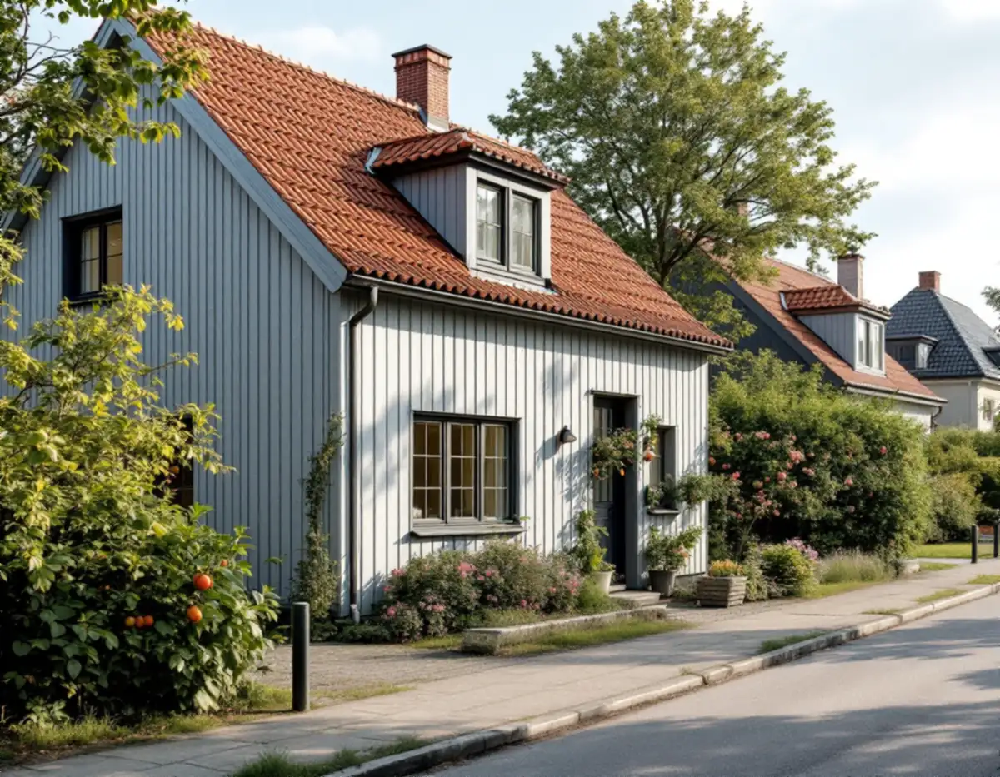
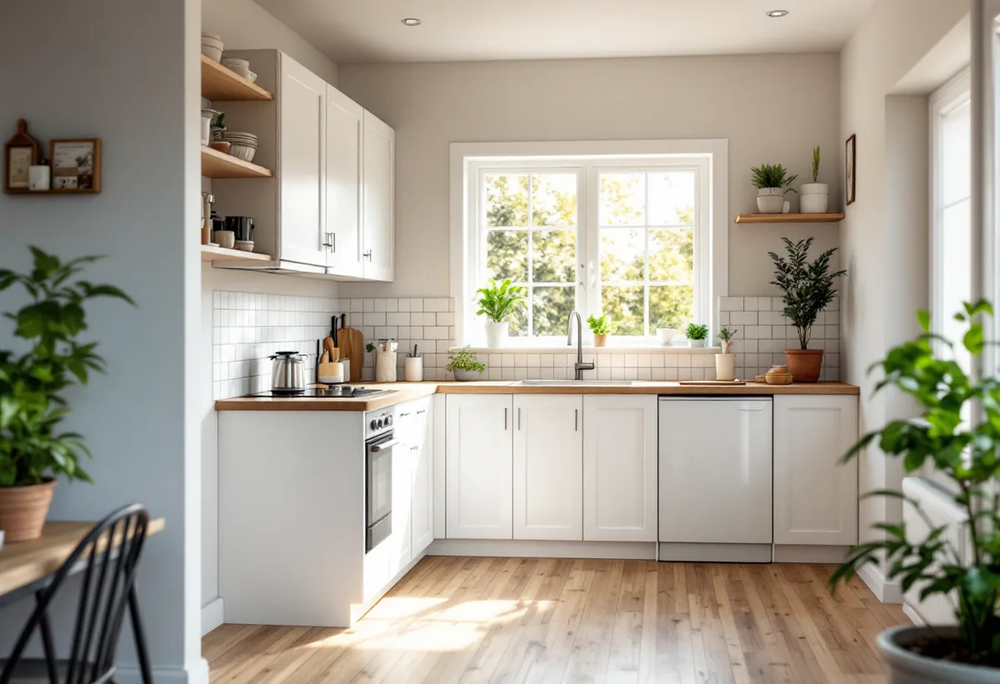

Platsbesök
Vi tittar på huset, rumshöjderna och var en ny entré kan ligga.
Många villor i Farsta är små, och fler familjer funderar på att inreda en egen bostad i huset för en förälder, ett vuxet barn eller för uthyrning. Geal Entreprenad AB bygger om villor i Farsta som total entreprenad och reder först ut om det räcker med en anmälan eller om bygglov krävs.

Enligt Stockholms stads områdesfakta fanns det 2024 drygt 5 200 bostäder i småhus i Farsta stadsdelsområde, och 3 806 av dem ägdes med äganderätt. Resten var småhus i bostadsrätt eller hyrda.
En stor del av småhusen ligger i småstugeområdena. Vägledningen Varsam utveckling av småhus- och villaområden nämner Tallkrogen, del av Svedmyra och del av Sköndal. Där byggdes husen efter stadens typritningar, och vägledningen konstaterar att bostäderna ofta är små och inte motsvarar dagens önskemål om standard.

Stockholms stad förklarar att du under vissa förutsättningar kan inreda ytterligare en bostad i ditt enbostadshus utan bygglov. Det gäller även om åtgärden inte följer detaljplanens bestämmelser.
Lovfriheten betyder inte att du kan börja direkt. Ändrar du brandskydd eller bärande konstruktion, installerar vatten och avlopp eller en eldstad behöver du göra en anmälan och vänta på startbesked. I praktiken gäller det de flesta projekt där en ny bostad med kök och badrum inreds.
Varsam beskriver småstugeområdena som kulturhistoriskt värdefulla miljöer, och i tabellen är Tallkrogen, del av Svedmyra och del av Sköndal markerade så. Staden skriver att utökad lovplikt gäller om du bor i en särskilt kulturhistoriskt värdefull byggnad eller ett sådant område. Då behöver du söka bygglov även för det som annars är bygglovsbefriat.
Stadsmuseets klassificeringskarta ger en första indikation, men staden påpekar att du kan behöva kontakta Stadsmuseet för en bedömning. Även fasadändringar i samband med en ny bostad kräver bygglov när huset eller området är särskilt värdefullt.
Staden skriver att en ny bostad ska uppfylla dagens krav, till exempel på tillgänglighet, brandsäkerhet, rumshöjd och bostadsutformning. Till bostaden ska det också finnas bostadskomplement som förråd, tvättstuga och förvaring för barnvagnar och cyklar.
I en liten småstuga kan rumshöjden och brandavskiljningen mellan bostäderna bli de svåraste frågorna. Vi mäter upp huset, tar fram ritningar och går igenom med dig vad som får plats innan något rivs.
En bostad till i huset fungerar bäst när båda hushållen kan leva sina liv utan att störa varandra. Egen entré, ljudisolering i bjälklag och väggar mellan bostäderna och en tydlig gräns för trädgård och förvaring är frågor som är enklare att lösa på ritbordet än i efterhand.
Vi går också igenom om installationerna ska delas eller vara separata, till exempel varmvatten, ventilation och el. Det påverkar både kostnaden och hur enkelt det blir att hyra ut eller att låta bostaden stå tom en period.
En ny bostad i villan innebär ofta att badrum och kök byggs, att en entré tillkommer och att väggar flyttas. Vi samordnar snickare, el, VVS och ventilation, och du har en kontakt genom hela arbetet. Du får också en tidsplan som visar när huset går att bo i och när det dammar som mest.
Om badrummet i sig kan du läsa under badrumsrenovering i Farsta, och om att renovera hela huset under totalrenovering i Farsta.
Vi tittar på huset, rumshöjderna och var en ny entré kan ligga.
Klassning, detaljplan och behov av bygglov kontrolleras.
Underlag för anmälan eller ansökan tas fram.
Varje del – bad, kök, väggar och installationer – står för sig.
Arbetet startar när startbeskedet finns.
Vi samlar intyg och kontrollplan inför slutbeskedet.
Rotavdraget är 30 procent av arbetskostnaden, högst 50 000 kronor per person och år och högst 75 000 kronor tillsammans med rutavdrag. Material och resor ger inget avdrag, och du ska äga bostaden när arbetet utförs.
Skatteverket ger rotavdrag för om- och tillbyggnad av ett småhus du äger. För arbete som ger avdrag drar Geal det direkt på fakturan.
Om bygglov krävs, hur mycket som byggs om och om nytt badrum, kök och ventilation behövs. En överblick finns under byggfirma. Efter ett gratis platsbesök får du ett skriftligt kostnadsförslag.
Total entreprenad för villan.
Byggfirma →Takbyte, takbesiktning och plåtarbeten.
Takläggare i Farsta →Småstugor, kulturmiljö och gränser.
Attefallshus i Farsta →ABC-staden, radhus och asbest i våtrummet.
Badrumsrenovering i Farsta →Tegel, puts, skivor och trädetaljer.
Fasadmålning i Farsta →Radhus, grupphus och fasadskivor.
Fasadrenovering i Farsta →Småstugor och radhus.
Fönsterbyte i Farsta →Småstugorna i Svedmyra och Sköndal.
Fönsterrenovering i Farsta →Linoleum, plastgolv och klinker i småstugan.
Golvläggare i Farsta →Slipa trägolvet och gå igenom resultatet.
Golvslipning i Farsta →ABC-staden, radhus och villor.
Köksrenovering i Farsta →Småstugor, ädelputs och radhus i Söderort.
Målare i Farsta →Skorstensbeslag och plåttak i Farsta.
Plåtslagare i Farsta →Förråd, gäststuga och skärmtak vid småstugan.
Snickare i Farsta →Radhusen, längan och föreningen.
Takbyte i Farsta →Tapet i 1960-talets lägenheter.
Tapetsering i Farsta →Småstugorna och typritningarna.
Totalrenovering i Farsta →